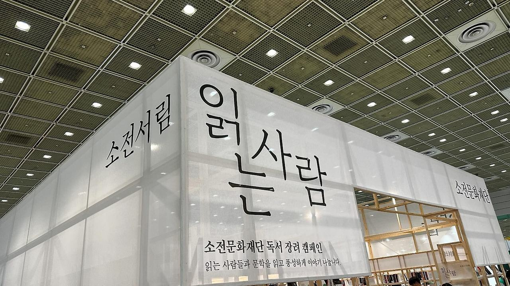
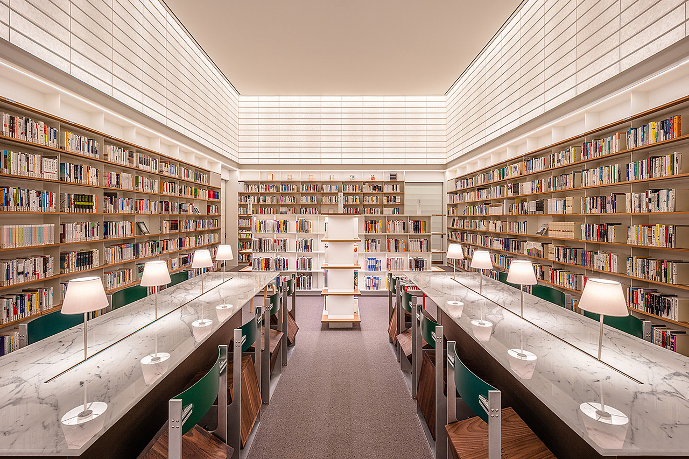

안녕하세요 라보엠입니다.
올해 국제도서전에서 가장 눈에 띄였던 부스가 소전서림이었습니다. 오늘은 소전서림에 대해 소개해드리려고 합니다.

청담동의 한적한 골목에 자리 잡은 소전서림은 '흰 벽돌로 둘러싸인 책의 숲'이라는 의미를 지닌 독특한 문화 공간입니다. 2020년 문을 연 이곳은 단순한 도서관을 넘어 문학과 예술이 공존하는 특별한 장소로 자리매김했습니다.
건축과 공간
소전서림의 외관은 그 자체로 하나의 예술 작품입니다. 스위스 건축가 다비데 마쿨로가 설계한 이 건물은 하얗고 네모난 상자를 수직으로 겹겹이 쌓아 올린 듯한 독특한 모양새로 시선을 사로잡습니다. 이러한 외관은 멀리서도 한눈에 알아볼 수 있는 소전서림만의 상징이 되었습니다.
내부로 들어서면 마치 비밀 북클럽에 초대받은 듯한 느낌을 받게 됩니다. 1층에는 카페와 전시 공간이 있으며, 계단을 통해 지하 1층으로 내려가면 소전서림의 중심 공간이 펼쳐집니다. 이 공간은 '집 밖의 내 서재'라는 컨셉으로 설계되어, 방문객들에게 편안하고 아늑한 분위기를 제공합니다.

도서 컬렉션과 큐레이션
소전서림은 약 3만여 권의 도서를 보유하고 있습니다. 비록 공공도서관에 비해 규모는 작지만, 그 질적인 면에서는 단연 돋보입니다. 각 분야의 전문가들이 공들여 선별한 도서들로 가득 차 있어, 양보다는 질을 중시하는 큐레이션의 철학이 잘 드러납니다.
주로 문학 도서를 중심으로 구성되어 있지만, 인문학, 철학, 과학 등 다양한 분야의 책들도 만나볼 수 있습니다. 매달 신간과 구간이 교체되며, 이는 소전서림 관장을 포함한 관계자들의 회의를 통해 결정됩니다.
특별한 경험
소전서림의 가장 큰 매력은 단순히 책을 읽는 공간을 넘어 문학을 사랑하는 사람들이 모이는 장소라는 점입니다. 이곳에서는 독서 모임, 북토크, 강연, 낭독회 등 다양한 문화 프로그램이 진행되어 방문객들에게 풍성한 경험을 제공합니다.
공간 곳곳에는 프리츠 한센, 핀율, 카시나 등 유명 브랜드의 의자들이 배치되어 있어, 편안하게 책을 읽을 수 있습니다. 또한 이탈리아 까라라 지역에서 공수한 대리석으로 만든 테이블은 소전서림의 고급스러운 분위기를 한층 더해줍니다.
소전서림 素磚書林 SOJEONSEOLIM
sojeonseolim.com
이용 안내
소전서림은 유료 회원제로 운영되며, 연회원 가입비는 10만 원입니다. 회원들은 1일 3시간 이용이 가능하며, 가입 시 10시간이 추가로 증정됩니다. 또한 반일권(5시간 이용)은 3만 원에 이용할 수 있습니다.
운영 시간은 화요일부터 일요일까지 오전 11시부터 오후 9시까지이며, 월요일은 휴관
소전서림 위치
지도는 제공되지 않습니다.
소전서림의 최신 소식은 인스타그램 @sojeonseolim을 통해 확인할 수 있습니다.
맺음말
소전서림은 단순한 도서관이 아닌, 문학과 예술, 그리고 사람이 어우러지는 특별한 공간입니다. 바쁜 일상에서 잠시 벗어나 자신만의 시간을 가지고 싶은 이들에게 완벽한 휴식처가 될 것입니다. 책으로 지은 이 아름다운 숲에서, 당신만의 특별한 독서 경험을 만들어보는 것은 어떨까요?